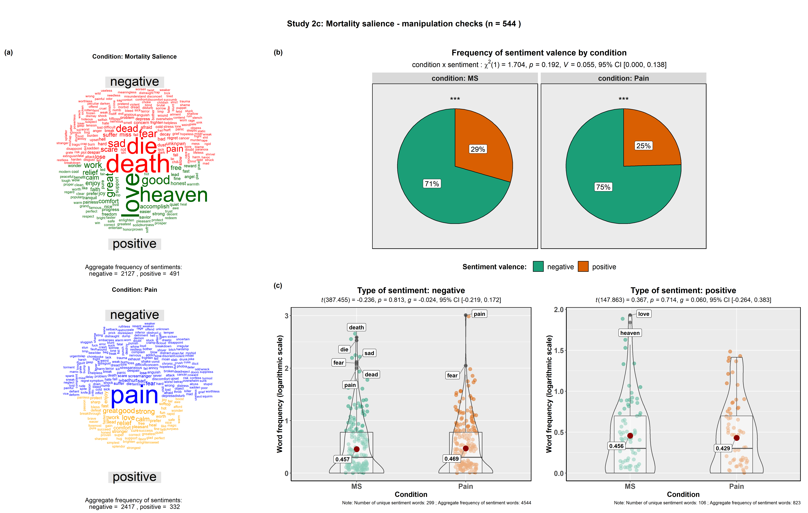

Entry 13¶
Mortality salience manipulation check¶
Indrajeet Patil
The mortality salience manipulation has been primarily used to explore people’s behaviors and attitudes when prompted to consider their own death (for a review, see Pyszczynski, Greenberg, & Solomon, 1999). Recent studies have shown that reminders of death has an impact on people’s analytical abilities (Gailliot, Schmeichel, & Baumeister, 2006). More specifically, it has detrimental consequences on every activity that requires the mobilization of cognitive resources, such as syllogistic reasoning (Trémolière et al., 2014) or moral utilitarianism (sacrificial dilemmas; Trémolière et al., 2012).
- Comparison wordclouds displaying the frequency of positive and negative sentiments revealed from the participants writings, for the Mortality Salience condition (in which participants were prompted to think about their own mortality) and the extreme pain condition (in which participants were prompted to think about a painful experience from their own life).
- Pie charts displaying the results from the contingency table analysis (condition x sentiment valence) show that participants were equally likely to report negative and positive sentiment words irrespective of which conditions they were assigned to.
- Frequency of positive and negative sentiment words as a function of the condition to which participants were assigned. Words with the highest frequencies have been tagged.
Abbreviations: MS – Mortality Salience. Note: ***p< 0.001; **p< 0.01; *p< 0.05; ns: non-significant denote results from one-sample proportion test.
Code and data: 1